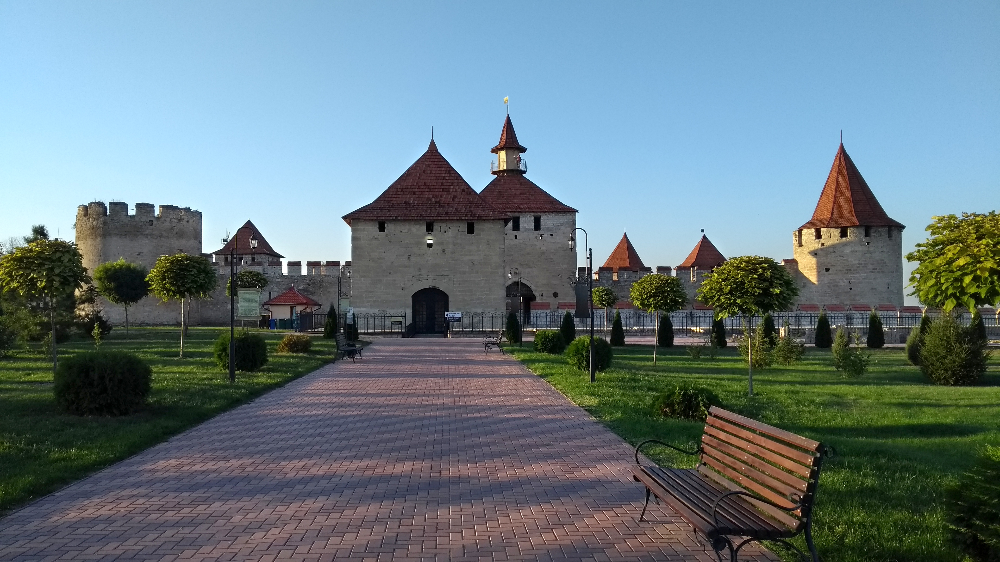

Soroca

Cetatea Soroca este o cetate moldovenească din secolul al XV-lea, clădită din lemn de Ștefan cel Mare, în fața vadului peste Nistru, și reconstruită în piatră de către Petru Rareș, la mijlocul secolului al XVI-lea.
Orhei

Orhei a fost o veche cetate moldoveană, amplasată de-a lungul apelor Răutului, la 15 km est de actualul oraș Orhei, între prezentele sate Trebujeni și Butuceni. Cetatea se poziționa pe o peninsulă creată de cursul Răutului, și era traversată de un val de zidărie și două de pământ care închideau limba de pământ spre uscat; din celelalte trei părți, adâncimea albiei râului și conformația râpoasă a malului înalt puneau cetatea la adăpost de atac. Astăzi, se mai disting, înăuntrul incintei, intrările unor depozite subterane, dar nici o altă construcție.
Tighina
etatea Tighina (redenumită de turci Bender) este o cetate moldovenească din secolul al XV-lea d.C., din timpul domniei lui Ștefan cel Mare, pe care a construit-o din pământ și lemn – o palancă, pentru a apăra trecătoarea de tătari. Cetatea de pământ era, probabil, rotundă sau semicirculară, avea șanț și val de apărare, iar în poala valului din interiorul cetății erau făcute locuințe de tip bordei. Acest lucru este demonstrat de săpăturile care au descoperit urmele unei locuințe arse și diferite obiecte de uz casnic din secolele XV-XVI.
Scurtă informație
| Cetatea | Fondat în | Fondat de |
|---|---|---|
| Soroca | Mijlocul sec. XVI | Ștefan cel Mare (reconstruită în piatră de Petru Rareș) |
| Orhei | ~anii 60 ai sec. XV | Ștefan cel Mare |
| Tighina | Sfârșitul sec. XV | Ștefan cel Mare |